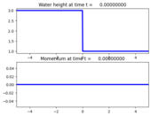

1-dimensional shallow water equation¶
Output:¶


Source:¶
#!/usr/bin/env python
# encoding: utf-8
r"""
Shallow water flow
==================
Solve the one-dimensional shallow water equations:
.. math::
h_t + (hu)_x & = 0 \\
(hu)_t + (hu^2 + \frac{1}{2}gh^2)_x & = 0.
Here h is the depth, u is the velocity, and g is the gravitational constant.
The default initial condition used here models a dam break.
"""
import numpy as np
from clawpack import riemann
from clawpack.riemann.shallow_roe_with_efix_1D_constants import depth, momentum, num_eqn
def setup(use_petsc=False,kernel_language='Fortran',outdir='./_output',solver_type='classic',
riemann_solver='roe', disable_output=False):
if use_petsc:
import clawpack.petclaw as pyclaw
else:
from clawpack import pyclaw
if kernel_language == 'Python':
if riemann_solver.lower() == 'roe':
raise Exception('Python Roe solver not implemented.')
elif riemann_solver.lower() == 'hlle':
rs = riemann.shallow_1D_py.shallow_hll_1D
elif kernel_language == 'Fortran':
if riemann_solver.lower() == 'roe':
rs = riemann.shallow_roe_with_efix_1D
elif riemann_solver.lower() == 'hlle':
rs = riemann.shallow_hlle_1D
if solver_type == 'classic':
solver = pyclaw.ClawSolver1D(rs)
solver.limiters = pyclaw.limiters.tvd.vanleer
elif solver_type == 'sharpclaw':
solver = pyclaw.SharpClawSolver1D(rs)
solver.kernel_language = kernel_language
solver.bc_lower[0] = pyclaw.BC.extrap
solver.bc_upper[0] = pyclaw.BC.extrap
xlower = -5.0
xupper = 5.0
mx = 500
x = pyclaw.Dimension(xlower,xupper,mx,name='x')
domain = pyclaw.Domain(x)
state = pyclaw.State(domain,num_eqn)
# Gravitational constant
state.problem_data['grav'] = 1.0
state.problem_data['dry_tolerance'] = 1e-3
state.problem_data['sea_level'] = 0.0
xc = state.grid.x.centers
IC='dam-break'
x0=0.
if IC=='dam-break':
hl = 3.
ul = 0.
hr = 1.
ur = 0.
state.q[depth,:] = hl * (xc <= x0) + hr * (xc > x0)
state.q[momentum,:] = hl*ul * (xc <= x0) + hr*ur * (xc > x0)
elif IC=='2-shock':
hl = 1.
ul = 1.
hr = 1.
ur = -1.
state.q[depth,:] = hl * (xc <= x0) + hr * (xc > x0)
state.q[momentum,:] = hl*ul * (xc <= x0) + hr*ur * (xc > x0)
elif IC=='perturbation':
eps=0.1
state.q[depth,:] = 1.0 + eps*np.exp(-(xc-x0)**2/0.5)
state.q[momentum,:] = 0.
claw = pyclaw.Controller()
claw.keep_copy = True
if disable_output:
claw.output_format = None
claw.tfinal = 2.0
claw.solution = pyclaw.Solution(state,domain)
claw.solver = solver
claw.outdir = outdir
claw.setplot = setplot
return claw
#--------------------------
def setplot(plotdata):
#--------------------------
"""
Specify what is to be plotted at each frame.
Input: plotdata, an instance of visclaw.data.ClawPlotData.
Output: a modified version of plotdata.
"""
plotdata.clearfigures() # clear any old figures,axes,items data
# Figure for depth
plotfigure = plotdata.new_plotfigure(name='Water height', figno=0)
# Set up for axes in this figure:
plotaxes = plotfigure.new_plotaxes()
plotaxes.xlimits = [-5.0,5.0]
plotaxes.title = 'Water height'
plotaxes.axescmd = 'subplot(211)'
# Set up for item on these axes:
plotitem = plotaxes.new_plotitem(plot_type='1d')
plotitem.plot_var = depth
plotitem.plotstyle = '-'
plotitem.color = 'b'
plotitem.kwargs = {'linewidth':3}
# Figure for momentum[1]
#plotfigure = plotdata.new_plotfigure(name='Momentum', figno=1)
# Set up for axes in this figure:
plotaxes = plotfigure.new_plotaxes()
plotaxes.axescmd = 'subplot(212)'
plotaxes.xlimits = [-5.0,5.0]
plotaxes.title = 'Momentum'
# Set up for item on these axes:
plotitem = plotaxes.new_plotitem(plot_type='1d')
plotitem.plot_var = momentum
plotitem.plotstyle = '-'
plotitem.color = 'b'
plotitem.kwargs = {'linewidth':3}
return plotdata
if __name__=="__main__":
from clawpack.pyclaw.util import run_app_from_main
output = run_app_from_main(setup,setplot)